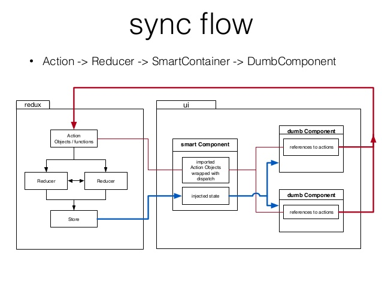

class: center, middle, nopages # InHouse Avito Helpdesk Front-app .subtitle[react приложение по работе с тикетами] .author[Дмитрий Кунин] --- ### План - Визуальная структура приложения - Файловая структура приложения - Логическая структура приложения - Правовая система на основе компонентов --- class: middle, no-bullets - .bold[Визуальная структура приложения] - .subtle[Файловая структура приложения] - .subtle[Логическая структура приложения] - .subtle[Правовая система на основе компонентов] --- #### Главная страница - Фильтрация - Выбор очереди - Создание тикета - Открытие тикета - Редактирование группы очередей - Редактирование очереди --- #### Страница деталей тикета - Редактирование данных тикета - Перевод тикета в разные состояния - Внутренний и внешний комментарий --- #### Страница инициатора - Просмотр сведений - Оставление комментария --- #### Каналы поступления тикета в систему - Агент (через админку) - Почта - Форма на сайте --- #### Дальнейшая жизнь тикета --- class: middle, no-bullets - .subtle[Визуальная структура приложения] - .bold[Файловая структура приложения] - .subtle[Логическая структура приложения] - .subtle[Правовая система на основе компонентов] --- #### Файловая структура <div class="small"> <pre class="half"> . ├── actions │ ├── assignees.es6 │ ... │ └── visibility.es6 ├── components │ ├── comments │ │ ├── comment-block.es6 │ │ ├── comment-block.styl │ │ └── single-comment.es6 │ └── ... ├── containers │ ├── App.es6 │ ... │ └── index.es6 ├── reducers │ ├── assignees.es6 </pre> <pre class="half"> │ ... │ └── visibility.es6 ├── store │ └── configureStore.es6 ├── tests │ ├── reducers │ │ ├── assignees.es6 │ │ ... │ │ └── visibility.es6 │ ├── test-data │ │ ... │ │ └── ticket-processed-example.json │ └── utils │ └── helpers.es6 └── utils ├── classnames.es6 ├── ... └── paginator-generator.es6 ├── app.es6 ├── app.styl └── config.es6 </pre> </div> --- class: middle, no-bullets - .subtle[Визуальная структура приложения] - .subtle[Файловая структура приложения] - .bold[Логическая структура приложения] - .subtle[Правовая система на основе компонентов] --- #### Стэк библиотек - React - React-router - Redux - Global Config - Custom middleware (logging, fetch) --- class: middle, center  --- #### Пути react-router <Provider store={store} key='provider'> <Router history={browserHistory}> <Route component={App}> <Route path='/helpdesk' component={MainPage} /> <Route path='/helpdesk/details/:ticketid' component={DetailsPage} /> <Route path='/helpdesk/client/:clientid' component={UserDetailsPage} /> </Route> </Router> </Provider> --- #### Global config /** * Файл настройки */ import { substractDays, substractMonths, firstDayOfMonth, lastDayOfMonth, letterAbbrevation } from './utils/helpers'; /** * Пути */ export const API = { user: '/helpdesk/permissions', users: '/helpdesk/user/search', userDetails: { info: '/helpdesk/user/:userId', tickets: '/helpdesk/user/:userId/tickets', comments: '/helpdesk/user/:userId/comments', addComment: '/helpdesk//user/:userId/comment' }, dictionaries: { tags: '/helpdesk/t ... --- class: small ### Fetching middleware export default function fetching() { return next => action => { const { fetching, types, sequence, ...rest } = action; if (!fetching) { return next(action); } let promise = fetching; if (Array.isArray(fetching)) { promise = sequence ? fetching.reduce((result, item) => result.then(item), Promise.resolve()) : Promise.all(fetching.map((item) => item())); } const [REQUEST, SUCCESS, FAILURE] = types; next({ ...rest, type: REQUEST }); return promise .then(response => { next({ ...rest, response, type: SUCCESS }); }) .catch(error => { next({ ...rest, error, type: FAILURE }); }); }; } --- class: middle, no-bullets - .subtle[Визуальная структура приложения] - .subtle[Файловая структура приложения] - .subtle[Логическая структура приложения] - .bold[Правовая система на основе компонентов] --- #### Доступные роли - Админ - Агент - Консультант --- #### Вариант №1 //auth { ... allowed: [...,'helpdesk-filters-manipulate'] } <RestrictedComponent auth={auth} rules={['helpdesk-filters-manipulate']}> ... </RestrictedComponent> --- #### Вариант №2 //auth { ... roles: { agent: true, admin: true, advisor: true } } <RestrictedComponent roles={auth.roles} allowedFor={['admin']}> ... </RestrictedComponent> --- #### Вариант №2 - продолжение export const ADMIN_ALLOWED = [ ... 'helpdesk-user-comment' ]; export const AGENT_ALLOWED = [ ... 'helpdesk-ticket-create' ]; export const ADVISOR_ALLOWED = []; ... case Config.AUTH_SET_SUCCESS: const auth = action.response; const roles = { admin: Config.ADMIN_ALLOWED.every(singlePermission => auth.permissions.indexOf(singlePermission) !== -1), ... }; return { ...auth, roles }; --- #### Сложности с которыми пришлось столкнуться и решения - Скорость приложения - Зацикливающиеся запросы - Доступность компонентов по правам --- class: center, middle, nopages # Вопросы? Дмитрий Кунин .no-bullets[ - vcard : .blue[dkun.in] - twitter : .blue[DKunin] - Skype : .blue[dkunin1985] ]